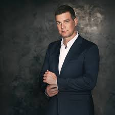
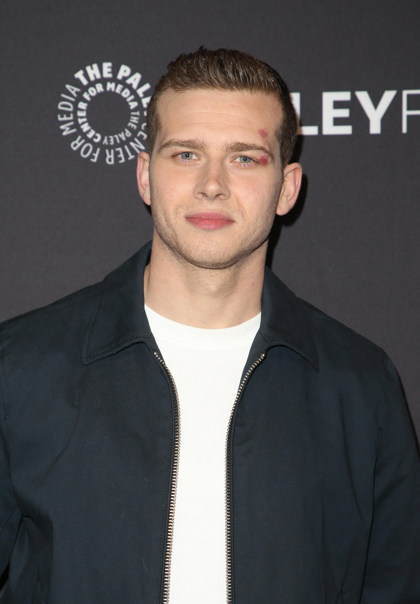
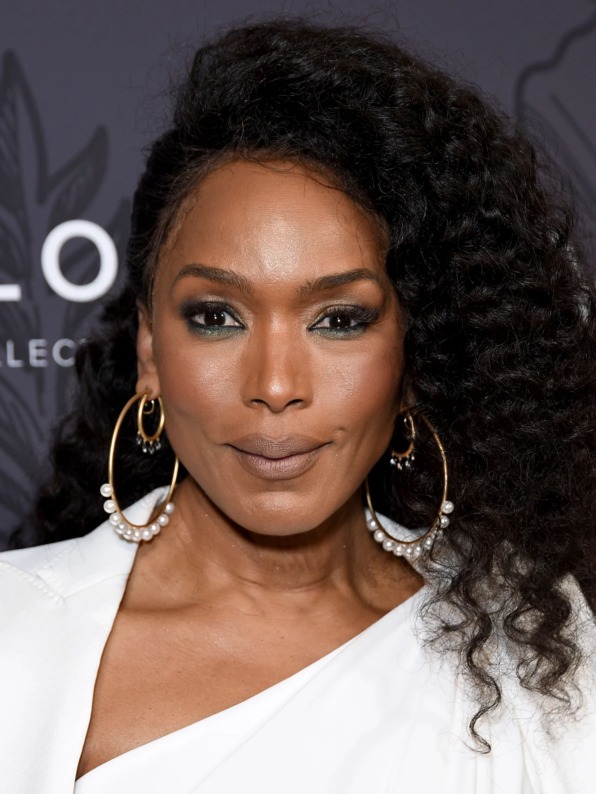
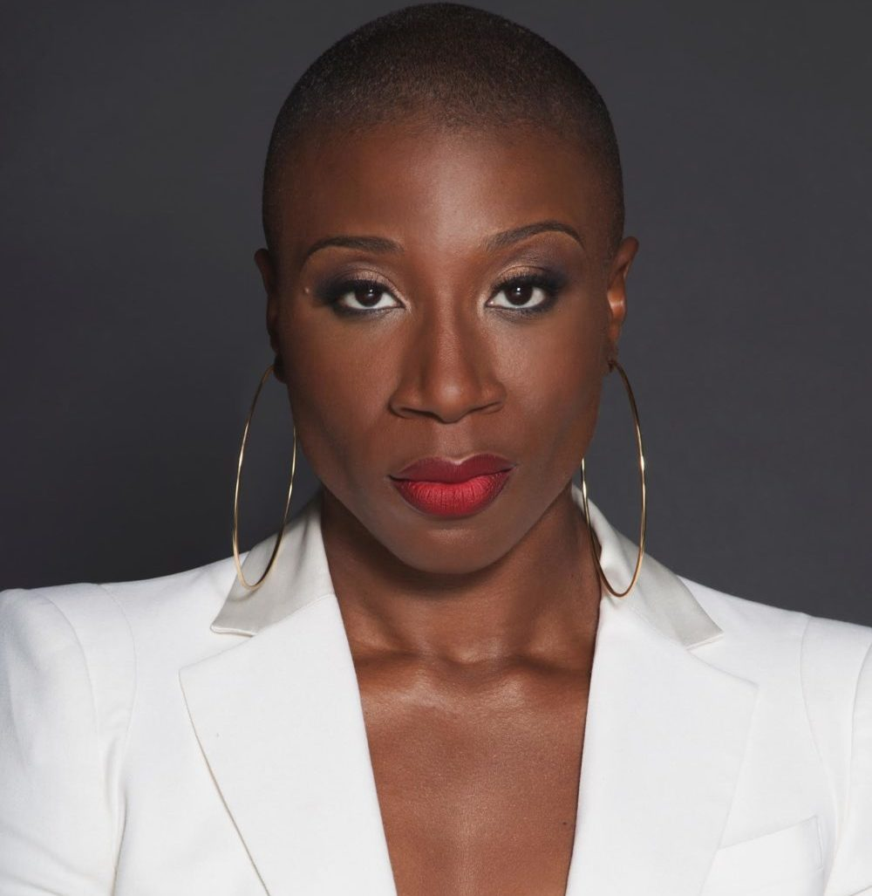
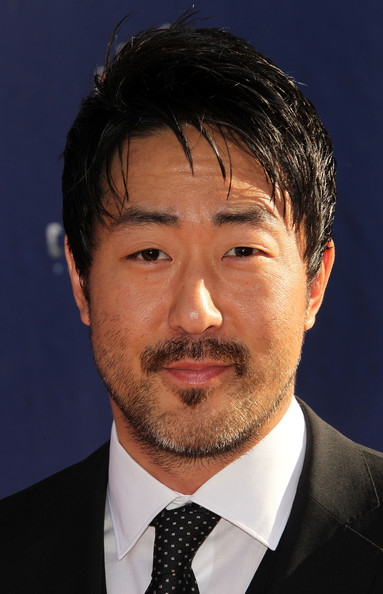
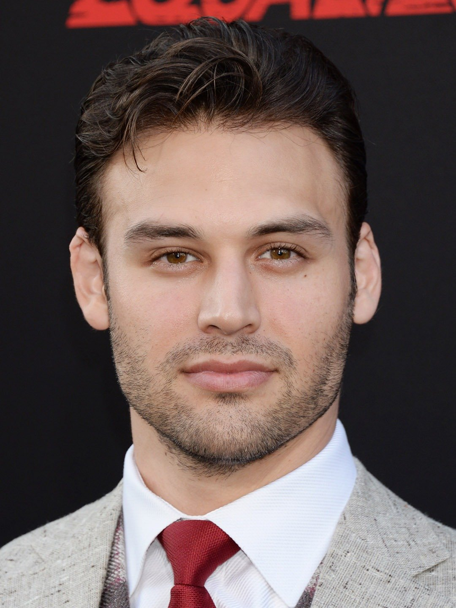
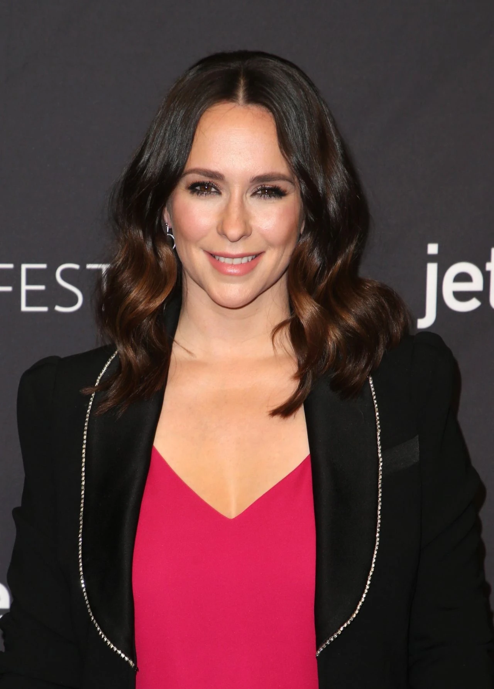

| Ator / Atriz |
Personagem |
Sobre |
|

|
Boddy Nash |
Trabalha como capitão da estação 118 do LAFD depois de perder
sua família no incêndio devastador que ele inadvertidamente
causou.
|
|

|
Evan Buckley |
Trabalha como bombeiro na Estação 118 do Corpo de Bombeiros de
Los Angeles e é o irmão mais novo de Maddie Buckley .
|
|

|
Athena Grant |
Trabalha como sargento de campo no Departamento de Polícia de
Los Angeles.Athena é casada com Bobby Nash e tem dois filhos,
com seu ex-marido, de quem ela se divorciou depois que ele se
assumiu gay.
|
|

|
Henrietta Wilson |
Trabalha como bombeira paramédica na Estação 118 do Corpo de
Bombeiros de Los Angeles .
|
|

|
Howie Han |
Trabalha como bombeiro paramédico na Estação 118 do Corpo de
Bombeiros de Los Angeles .
|

|
Christopher Diaz |
Christopher Diaz é filho de Eddie e Shannon. Nasceu com
paralisia cerebral, seu pai havia ido para o Afeganistão, mas
conseguiu voltar para casa a tempo de seu nascimento. Depois que
sua mãe o deixou.
|
|

|
Eddie Diaz |
Trabalha como bombeiro na Estação 118 do Corpo de Bombeiros de
Los Angeles e é pai de Christopher Diaz .
|
|

|
Maddie Buckley |
Trabalha como despachante do 9-1-1 na área de Los Angeles e é a
irmã mais velha de Evan Buckley .
|